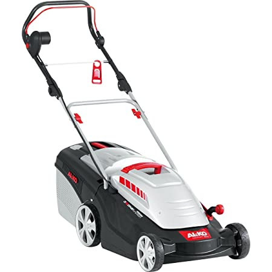

AL-KO Comfort 40 E
L'AL-KO Comfort 40 E és un tallagespa elèctric de gran rendiment i qualitat, ideal per a l'ús domèstic en jardins de mida mitjana. Amb un potent motor de 1400 W i una amplada de tall de 40 cm, aquest tallagespa proporciona un tall eficaç en qualsevol tipus de gespa. A més, disposa d'un sistema d'ajust d'alçada de tall en 6 posicions, que permet adaptar el tall a les teves necessitats específiques.
El disseny ergonòmic i lleuger de l'AL-KO Comfort 40 E el converteix en una opció ideal per a usuaris que busquen un tallagespa fàcil de transportar i emmagatzemar. El sistema de pinta per a gespa assegura un tall net i uniforme, fins i tot prop dels marges.
No esperis més i adquireix el teu AL-KO Comfort 40 E per gaudir d'un jardí perfecte en tot moment.
Compra ara